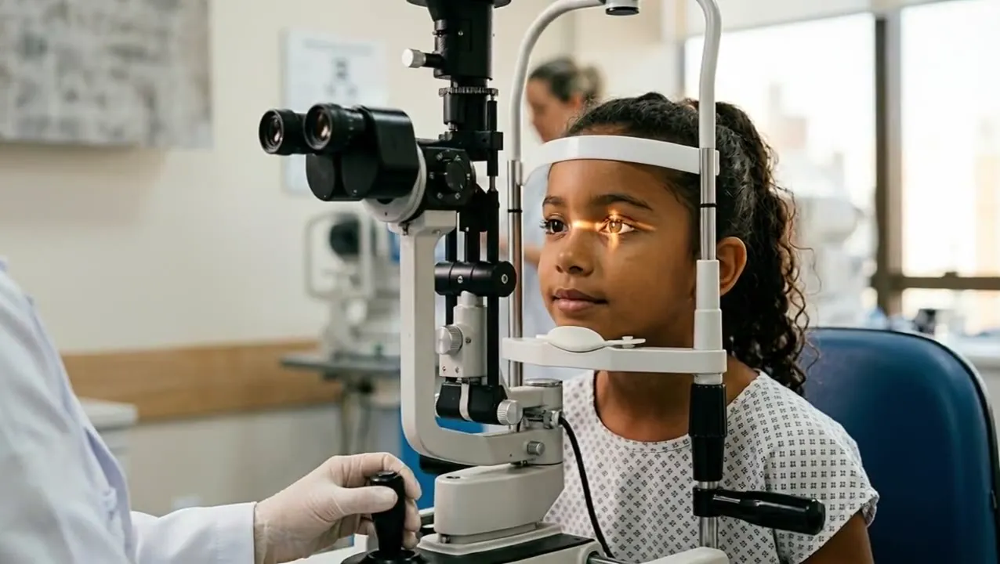

Fundação do Hoftalon, em Londrina.
Desde 1992, o Hoftalon cresceu de 4 medicos a mais de 130 oftalmologistas, sem nunca perder o que nos move: transformar vidas atraves de novos olhares.
O Hoftalon nasceu em abril de 1992. O Dr. Nobuaqui Hasegawa e Ana Regina Sato usaram a herança que receberam de seus pais para construir e equipar o hospital.
O que começou com 9 funcionários e 4 médicos hoje é o maior centro oftalmológico do Paraná: quase 200 colaboradores, mais de 130 oftalmologistas, 150 mil atendimentos e 11 mil cirurgias por ano.
"Fizemos o que de melhor se pode fazer com uma herança: nossos pais ajudaram a realizar um sonho dos filhos, gerando benefícios públicos duradouros."

Transformar a vida das pessoas através de novos olhares.
Ser referência internacional em qualidade, geração de conhecimento e sustentabilidade.
Da recepção ao centro cirúrgico, cada ambiente é projetado para oferecer segurança e tecnologia em cada etapa do atendimento.

Primeiro hospital brasileiro na associação que reúne os centros oftalmológicos mais renomados do mundo.

42ª posição em cirurgia de catarata na América Latina. Único do interior do Brasil na lista.

Acreditado Pleno. Primeiro hospital de olhos do Sul do país a receber a certificação.

Entre os melhores hospitais para se trabalhar no Brasil, segundo o Great Place To Work.
Programa de Residência Médica em Oftalmologia credenciado pelo MEC desde 2004.
Certificado como Entidade Beneficente de Assistência Social na área da Saúde.
Do projeto "De Olho nos Olhinhos" ao maior programa de transplantes do Paraná, levamos saúde ocular a quem depende do SUS em mais de 120 municípios.